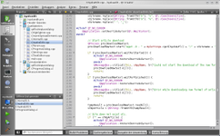
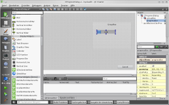
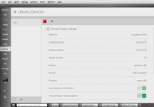
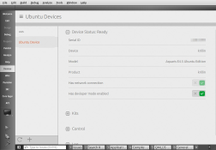
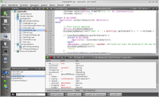
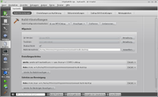

Qt Creator
Dieser Artikel wurde für die folgenden Ubuntu-Versionen getestet:
Ubuntu 16.04 Xenial Xerus
Ubuntu 14.04 Trusty Tahr
Zum Verständnis dieses Artikels sind folgende Seiten hilfreich:
Qt Creator  ist eine Entwicklungsumgebung, die speziell auf die Verwendung der Klassenbibliothek Qt unter C++ und QML zugeschnitten ist, aber auch die Erstellung von C/C++ Programmen und Bibliotheken ohne Qt unterstützt. Sie enthält einen Codeeditor mit Syntaxhervorhebung und Autovervollständigung, ein kontextsensitives Hilfesystem, einen visuellen Debugger, Unterstützung von Versionsverwaltung, sowie eine Projektverwaltung. Zusätzlich integriert Qt Creator den Qt Designer und Qt Assistant, welche auch als eigenständige Anwendungen verfügbar sind.
ist eine Entwicklungsumgebung, die speziell auf die Verwendung der Klassenbibliothek Qt unter C++ und QML zugeschnitten ist, aber auch die Erstellung von C/C++ Programmen und Bibliotheken ohne Qt unterstützt. Sie enthält einen Codeeditor mit Syntaxhervorhebung und Autovervollständigung, ein kontextsensitives Hilfesystem, einen visuellen Debugger, Unterstützung von Versionsverwaltung, sowie eine Projektverwaltung. Zusätzlich integriert Qt Creator den Qt Designer und Qt Assistant, welche auch als eigenständige Anwendungen verfügbar sind.
|  |
| Codeeditor |
|  |
| Integration von Qt Designer |
|  |
| Ubuntu Touch Emulator |
|  |
| bq Aquaris E4.5 Ubuntu Edition |
Installation¶
Qt Creator erhält man über das folgende Paket [1]:
qtcreator (universe)
 mit apturl
mit apturl
Paketliste zum Kopieren:
sudo apt-get install qtcreator
sudo aptitude install qtcreator
Manuell¶
Auf der Herstellerseite  kann eine *.bin Installationsdatei heruntergeladen werden. Diese muss ausführbar [2] gemacht und gestartet [3] werden. Es erscheint ein Assistent, der durch den Installationsprozess leitet. Unter Umständen müssen einzelne Komponenten (bspw. der Debugger GDB) manuell nachinstalliert werden.
kann eine *.bin Installationsdatei heruntergeladen werden. Diese muss ausführbar [2] gemacht und gestartet [3] werden. Es erscheint ein Assistent, der durch den Installationsprozess leitet. Unter Umständen müssen einzelne Komponenten (bspw. der Debugger GDB) manuell nachinstalliert werden.
Bedienung¶
Qt Creator wird über den Menüpunkt "Entwicklung -> Qt Creator" gestartet. Nach dem Start wird die Möglichkeit geboten, mitgelieferte Beispielprogramme zu laden. Alternativ kann man über "Datei -> Neu" oder über die Schaltfläche "Projekt erstellen..." in der Werkzeugleiste ein eigenes Projekt anlegen. Hierbei gibt es einige Projektvorlagen, die mit Hilfe eines Assistenten konfiguriert werden können. Nachdem ein Projekt erstellt wurde, können weitere Einstellungen über die Schaltfläche "Projekte" vorgenommen werden.
Editieren¶
Die Editorkomponente von Qt Creator überprüft bereits beim Schreiben des Quellcodes auf Korrektheit und zeigt syntaktische oder semantische Fehler durch eine rote bzw. dunkelgrüne Unterstreichung an. Zusätzlich steht neben einer Codevervollständigung eine kontextsensitive Hilfe zur Verfügung. Über eine Dropdown-Liste in der Werkzeugleiste oberhalb des Editors kann man schnell zu Symbolen (Funktionen, Variablendeklarationen, etc.) innerhalb der gerade angezeigten Datei navigieren. Symboldefinitionen und -deklarationen können über F2 angezeigt werden, nachdem man das entsprechende Symbol mit dem Mauszeiger markiert hat.
Durch  auf eine Zeilennummer im Editor kann man an diese Stelle einen Haltepunkt (zum späteren Debuggen) und ein Lesezeichen einfügen. Lesezeichen können in der Seitenleiste links neben dem Editor über eine Dropdown-Liste angezeigt werden, wodurch schnell zu wichtigen Codestellen gesprungen werden kann. Über die Menüeinträge "Fenster -> Teilen" und "Fenster -> Nebeneinander Teilen" kann das Editorfenster sowohl vertikal als auch horizontal geteilt und somit mehrere Dateien gleichzeitig angezeigt werden.
auf eine Zeilennummer im Editor kann man an diese Stelle einen Haltepunkt (zum späteren Debuggen) und ein Lesezeichen einfügen. Lesezeichen können in der Seitenleiste links neben dem Editor über eine Dropdown-Liste angezeigt werden, wodurch schnell zu wichtigen Codestellen gesprungen werden kann. Über die Menüeinträge "Fenster -> Teilen" und "Fenster -> Nebeneinander Teilen" kann das Editorfenster sowohl vertikal als auch horizontal geteilt und somit mehrere Dateien gleichzeitig angezeigt werden.
Bestimmte Codeabschnitte wie Funktionen, Schleifen, If-Anweisungen usw. können durch  auf den kleinen Pfeil neben der Zeilennummer, wie aus anderen Editoren bekannt, eingefaltet werden. Außerdem verfügt Qt Creator über einen "FakeVim"-Modus. Wird dieser über "Bearbeiten -> Erweitert -> Vim benutzen" aktiviert, so bildet der Editor das Verhalten von Vim nach.
auf den kleinen Pfeil neben der Zeilennummer, wie aus anderen Editoren bekannt, eingefaltet werden. Außerdem verfügt Qt Creator über einen "FakeVim"-Modus. Wird dieser über "Bearbeiten -> Erweitert -> Vim benutzen" aktiviert, so bildet der Editor das Verhalten von Vim nach.
Design¶
 Qt Creator stellt zwei integrierte grafische Editoren bereit: Qt Designer zur Erstellung von Benutzerschnittstellen mit Hilfe von Qt Widgets und den Qt Quick Designer, der für die Entwicklung animierter Benutzeroberflächen mit der Sprache QML verwendet werden kann. Durch einen Doppelklick auf eine .ui oder .qml Datei öffnet sich der dazugehörige Designer. Die Verwendung des Qt Designers ist im dazugehörigen Artikel beschrieben. Für weitere Informationen zur Benutzung von Qt Quick sei auf die offizielle Dokumentation verwiesen.
Qt Creator stellt zwei integrierte grafische Editoren bereit: Qt Designer zur Erstellung von Benutzerschnittstellen mit Hilfe von Qt Widgets und den Qt Quick Designer, der für die Entwicklung animierter Benutzeroberflächen mit der Sprache QML verwendet werden kann. Durch einen Doppelklick auf eine .ui oder .qml Datei öffnet sich der dazugehörige Designer. Die Verwendung des Qt Designers ist im dazugehörigen Artikel beschrieben. Für weitere Informationen zur Benutzung von Qt Quick sei auf die offizielle Dokumentation verwiesen.
|  |
| Debugger |
Debuggen¶
Als Debugger kommt standardmäßig GDB zum Einsatz, jedoch kann dies über "Extras -> Einstellungen... -> Debugger" geändert und angepasst werden. Nachdem der Debugger gestartet wurde, wechselt Qt Creator automatisch in den Debug-Modus. Es stehen verschiedene Möglichkeiten zum Debuggen zur Verfügung. Nebem des Debuggens einer lokal gestarteten Anwendung kann dies bspw. auch über eine Remote-Verbindung oder auf einer bestimmten Zielhardware geschehen (siehe Debugger Operating Modes ).
Hinweis:
Das Starten des Debuggers kann je nach Rechenleistung des PCs und der Anzahl bzw. Komplexität der verwendeten Qt Komponenten (bspw. QtWebkit) einige Sekunden bis Minuten betragen.
Im Debug-Modus kann auf eine Vielzahl von Informationen zugegriffen werden. Der Fensterbereich unterhalb des Editors kann durch auf einen Reiter nach den persönlichen Bedürfnissen angepasst werden (Haken bei "Verankert" entfernen und beliebige Reiter ein- / ausblenden). Beispielsweise können Variablen, der Stack oder Registerwerte angezeigt werden. Wie aus anderen Entwicklungsumgebungen gekannt, kann der Quellcode bspw. Zeilenweise untersucht werden. Hierzu stehen drei Schaltflächen unterhalb des Editors zur Verfügung, alternativ können auch die folgenden Tasten verwendet werden: "Einzelschritt über"
F10 (einzelne Zeile ausführen), "Einzelschritt herein"
F11 (in Funktion springen), "Einzelschritt heraus"
⇧ +
F11 (aus Funktion heraus springen), "Fortsetzen"
F5 (Anwendung weiterlaufen lassen)
|  |
| Projekteinstellungen |
Projekte¶
 Sofern Qt korrekt installiert wurde, sollten die Einstellungen zum Kompilieren und Ausführen der Anwendung automatisch richtig in der Projektverwaltung eingetragen sein. Bei Bedarf können diese im Reiter "Build-Einstellungen" und "Einstellungen zur Ausführung" manuell angepasst werden. Des Weiteren kann unter "Editoreinstellungen" speziell für das geladene Projekt der Editor konfiguriert werden. Gleiches gilt für den "Coding-Stil". Zusätzlich besteht im Reiter "Abhängigkeiten" die Möglichkeit bei mehreren geöffneten Projekten die Erstellungsreihenfolge dieser festzulegen. Beispiel: Projekt A hängt von Projekt B ab, d.h. Projekt B muss zuerst erstellt werden.
Sofern Qt korrekt installiert wurde, sollten die Einstellungen zum Kompilieren und Ausführen der Anwendung automatisch richtig in der Projektverwaltung eingetragen sein. Bei Bedarf können diese im Reiter "Build-Einstellungen" und "Einstellungen zur Ausführung" manuell angepasst werden. Des Weiteren kann unter "Editoreinstellungen" speziell für das geladene Projekt der Editor konfiguriert werden. Gleiches gilt für den "Coding-Stil". Zusätzlich besteht im Reiter "Abhängigkeiten" die Möglichkeit bei mehreren geöffneten Projekten die Erstellungsreihenfolge dieser festzulegen. Beispiel: Projekt A hängt von Projekt B ab, d.h. Projekt B muss zuerst erstellt werden.
Analyse¶
Ab Qt Creator 2.4 (Ubuntu 12.04) ist die Analyse von QML-Code möglich. Beispielsweise kann eine Valgrind Speicheranalyse durchgeführt werden.
Hilfe¶
 Sowohl Qt als auch die zur Verfügung stehenden Anwendungen verfügen über eine sehr umfangreiche Dokumentation. Qt Creator bindet das Programm Qt Assistant in seine Oberfläche ein, woduch schnell während des Programmierens auf die Hilfe zugegriffen werden kann. Es sind die englischen Anleitungen zu Qt Assistant, Qt Designer, Qt Linguist, QMake, Qt Creator, sowie die komplette Qt Referenz enthalten. Markiert man im Codeeditor ein Qt Element und drückt
F1 , öffnet sich die Qt Referenz des entsprechenden Elements.
Sowohl Qt als auch die zur Verfügung stehenden Anwendungen verfügen über eine sehr umfangreiche Dokumentation. Qt Creator bindet das Programm Qt Assistant in seine Oberfläche ein, woduch schnell während des Programmierens auf die Hilfe zugegriffen werden kann. Es sind die englischen Anleitungen zu Qt Assistant, Qt Designer, Qt Linguist, QMake, Qt Creator, sowie die komplette Qt Referenz enthalten. Markiert man im Codeeditor ein Qt Element und drückt
F1 , öffnet sich die Qt Referenz des entsprechenden Elements.
Versionsverwaltung¶
Es besteht die Möglichkeit entweder bei der Erstellung eines neuen Projekts dieses direkt aus einem vorhandenen Repository zu erstellen ("Datei -> Neu -> Projekt aus Versionskontrollsystem") oder es kann über den Menüpunkt "Extras" vom gerade geöffneten Projekt ein Repository erzeugt bzw. die Codeänderungen in ein bestehendes übertragen werden. Unter Umständen müssen die Versionsverwaltungssysteme über "Extras -> Einstellungen... -> Versionskontrolle" vorher noch konfiguriert werden, bzw. das entsprechende Plugin de-/aktiviert werden ("Hilfe -> Über Plugins..."). Qt Creator bietet Unterstützung für die folgenden Versionsverwaltungssysteme:
Perforce (ab Perforce-Version 2006.1)

- Erstellt mit Inyoka
-
 2004 – 2017 ubuntuusers.de • Einige Rechte vorbehalten
2004 – 2017 ubuntuusers.de • Einige Rechte vorbehalten
Lizenz • Kontakt • Datenschutz • Impressum • Serverstatus -
Serverhousing gespendet von